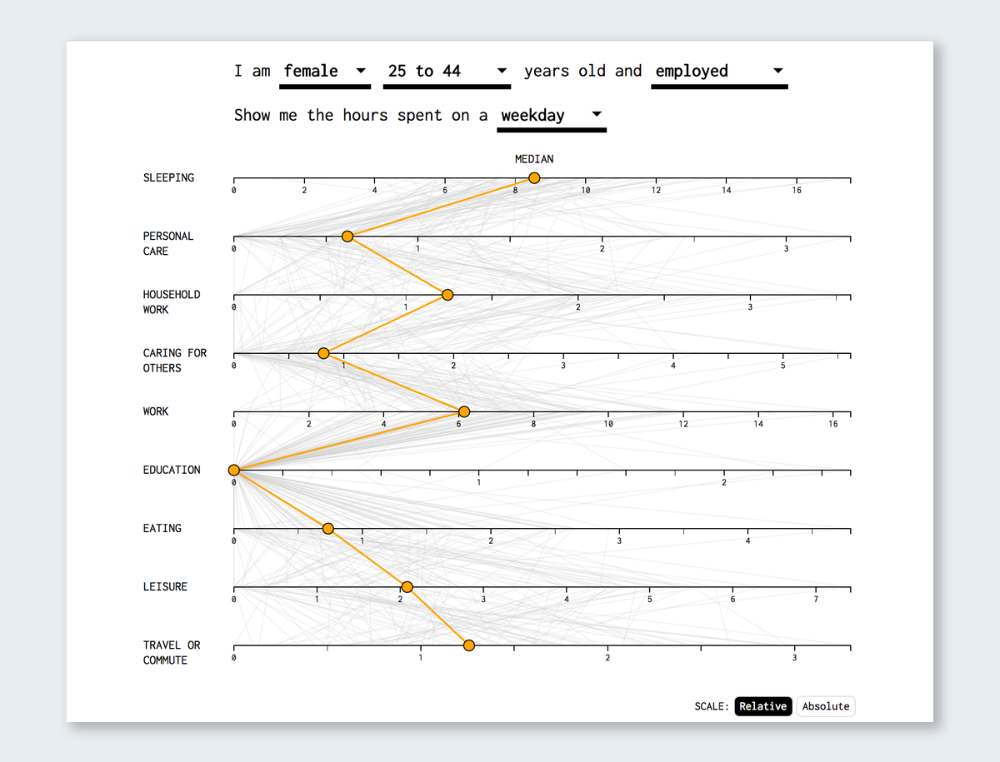
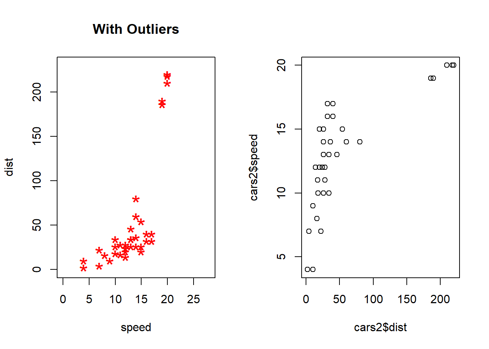
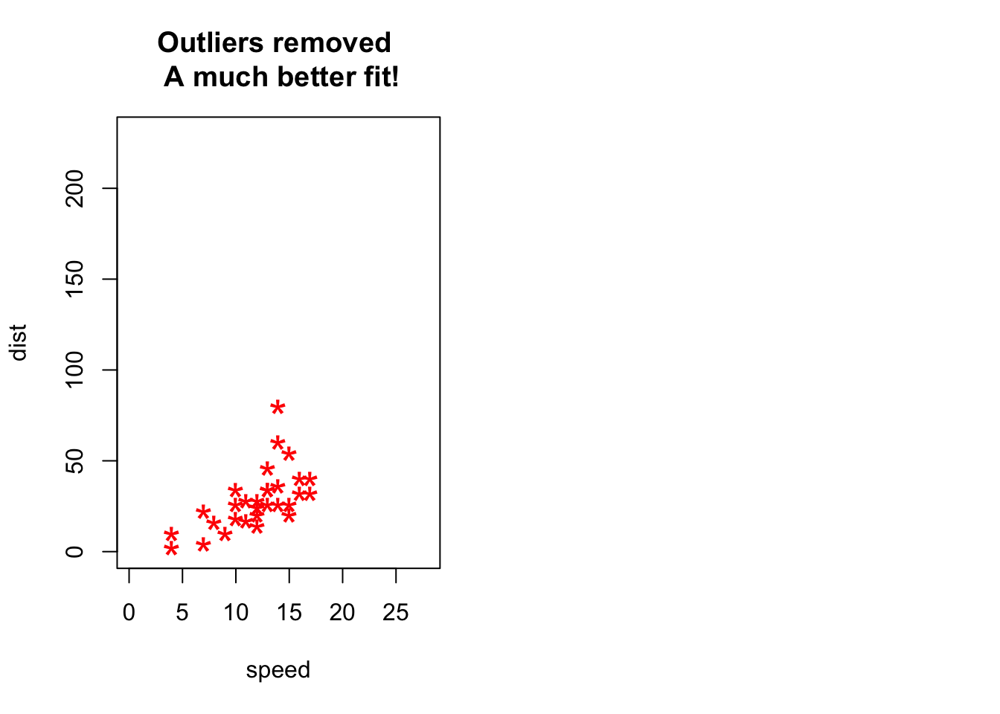

Chapter 4 Case Studies
10 Best Data Visualization Projects of 2015 (Nathan Yau 2015a) The author picked top 10 projects for the best data visualization of 2015, for each pick, the author showed the project plot and also described the reason why he chose. So after reading this article, I have a basic understanding of what kind of characters should include in a good visualization project.
(Nathan Yau 2015a) Let us have a look at some good examples of graphs, visuals and data products that make a claim and proceed to tell a story that is wholly contained within the example itself.
4.1 1. 15 Cool Information Graphics and Data Viz from 2016** (Kayla Darling 2017)
Description and Replication of Great Examples of Data Visualization Collections of Great Examples of Data Visualization
4.2 2. 16 Captivating Data Visualization Examples** (Crooks 2017)
4.3 3. 15 Data Visualizations That Explain Trump, the White Oscars and Other Crazy Current Events** (???)
15 Cool Information Graphics and Data Viz from 2016 reference:(Kayla Darling 2017)
Case studies contain valuable information about development records. The evaluation and study of case study helps show that the new design is just as usable as existing techniques, making it suitable for future development. This chapter contains some very useful case studies. Many of the case studies below come from the following articles:
Visualization is like art. It speaks where words fail. There are phenomenas like the Syrian war, the number flights during Thanksgiving in the USA, the understanding of depths for developing perspective about the range of the issue, the controversy of ‘#OscarsSoWhite’, etc. on which we can write bundles of paragraphs, but they might still have scope for ambiguity. The links show some intricate visualizations of the topics like those mentioned above, and speak volumes without requiring paragraphs to explain what is going on within these visualizations. According to me, it is really interesting to see that almost anything in this world can be explained by visualizations. Visualizations are not just limited to businesses and their analytics. Wars, rescue operations, etc. can also be visualized to get a clear idea of all the details of the issues.
4.5 1. 15 Cool Information Graphics and Data Viz from 2016 (Kayla Darling 2017)
The author chose fifteen of the best infographics and data visualizations from 2016 and described why they think these are the best.And the following six examples are from the articles:
4.6 5. Connecting the Dots Behind the Election
(Aisch and Yourish 2015) referenced in (Kayla Darling 2017) ## 1.1 Connecting the Dots Behind the Election
This article by the New York Times lists several different candidates and creates compelling visuals that link their campaigns to previous ones.
Each visual contains several different-sized dots that represent a specific campaign, administration, or other governmental organization related to the candidate’s current campaign, which are then connected by arrows.
Hovering over a specific dot highlights the connections between the groups. The visual is a great way to put what would otherwise be a long slog through years of information into an easily accessible, easily viewable format so that voters can figure out where the candidates’ experiences lie.
Clinton 2016 Campaign Staff
4.7 6. Spies in the Skies
(Aldhous and Seife 2016) referenced in (Kayla Darling 2017)
Source: (Aisch and Yourish 2015) referenced in (Kayla Darling 2017)
4.7.1 1.2 Spies in the Skies
The map is filled with red and blue lines (representing FBI and DHS aircraft, respectively) which illustrate the flight paths of the planes. When planes circle an area more than once, the circles become darker. The circles change in accordance to day and time, and individual cities can be typed into a search bar to see the flight patterns over them.
The visualization, rather creatively, almost looks like a hand-drawn map. While presenting a normally uncomfortable topic, this allows individuals to check things for themselves, hopefully providing some peace of mind.
New York Flight Patterns
4.8 7. Green Honey
(Lee 2016) referenced in (Kayla Darling 2017) Source: (Aldhous and Seife 2016) referenced in (Kayla Darling 2017)
4.8.1 1.3 Green Honey
The visualization spans a webpage. As you scroll down, the text changes, as do many colored dots that move over the white background. The dots are used to represent not only each colors’ hue, but the numbers that fall into each category—for example, what colors are the most popular “base” colors for English and Chinese.
The continuous flow of this visualization helps really bring it together, allowing users to scroll through the information at their own pace, but also creating a seamless, creative work.
4.9 8. How People Like You Spend Their Time
(Yau 2016) referenced in (Kayla Darling 2017) ### 1.4 How People Like You Spend Their Time
The visual lists several categories along one side of a graph—such as “personal care” and “work”—with a line illustrating the amount of time the average person in a certain demographic spends on each subject. Entering different statistics at the top—such as changing gender or age—causes the lines to shift to feature that demographic.
The simplicity of this visualization really helps the information get across and avoids bogging down the statistics. Sometimes, less is more.
4.10 6.Is it Better to Rent or Buy?
reference: (Bostock, Carter, and Tse 2014) 
4.11 9. Is it Better to Rent or Buy?
(Bostock, Carter, and Tse 2014) referenced in (Kayla Darling 2017) Source: (Yau 2016) referenced in (Kayla Darling 2017)
4.11.1 1.5 Is it Better to Rent or Buy?
The calculator includes several sloping charts. Each chart includes a factor that’ll affect how much you’ll have to pay, such as the individual cost of your home and your mortgage rates. A movable scale along the bottom of each chart allows you to enter different data, changing the “cost of rent per month” on the side. If you can find a similar house to rent for that much per month or less, it’s more cost effective to just rent the home. This visualization is incredibly thorough and a useful tool for homeowners of any age and status.
4.12 10. Two Centuries of U.S. Immigration
(???) referenced in (Kayla Darling 2017)
4.12.1 1.6 Two Centuries of U.S. Immigration
The interactive map shows the rate of immigration into the U.S. from other countries over the last 200 years in 10-year segments. Colored dots represent 10,000 people coming from the specified country. Countries then light up when they have one of the highest rates of migration. What makes this a good visualization is that it is engaging and easy to read and interpret. The movement of the dots draws the reader’s attention while the brightly lit countries make it easy to pick out the highest total migrations.

US Immigration
4.13 11. What’s really warming the world?
(Roston and Migliozzi 2015) referenced in (Keating and Kirk 2015)
Source: (???) referenced in (Kayla Darling 2017)
4.14 8.What’s really warming the world?
reference:(Roston and Migliozzi 2015)
4.15 2. 16 Captivating Data Visualization Examples (Keating and Kirk 2015)
4.15.1 2.1 What’s really warming the world?
In this case study, it first claimed the background story and the analytical questions clearly. Then it analyzed each different factor separately using both verbal explanations and dynamic graphics to compare with the observed temperature movements, and then grouped related factors into Natural factors category or Human factors category. After that, it combined all the dynamic graphics into one and made the results more straightforward in terms of comparisons. In the end, the authors also provided more detailed explanations with dataset sources to support the results shown above.
Overall, this case study is straightforward, easy to understand but also with enough information shown on each graphics.
Source: (Roston and Migliozzi 2015) referenced in (Keating and Kirk 2015)
4.16 12. The Strengths of Animated Data Visualization
(Nathan Yau 2015b) referenced in (???) ## 3. 15 Data Visualizations That Explain Trump, the White Oscars and Other Crazy Current Events** (???)
Visualization is like art. It speaks where words fail. There are phenomenas like the Syrian war, the number flights during Thanksgiving in the USA, the understanding of depths for developing perspective about the range of the issue, the controversy of ‘#OscarsSoWhite’, etc. on which we can write bundles of paragraphs, but they might still have scope for ambiguity.
The links show some intricate visualizations of the topics like those mentioned above, and speak volumes without requiring paragraphs to explain what is going on within these visualizations.
4.17 9.The Strengths of Animated Data Visualization
According to me, it is really interesting to see that almost anything in this world can be explained by visualizations. Visualizations are not just limited to businesses and their analytics. Wars, rescue operations, etc. can also be visualized to get a clear idea of all the details of the issues.
4.17.1 3.1 The Strengths of Animated Data Visualization
The page linked above includes a great example of animated data visualization showing the time people spend on daily activities throughout the day. The plot is simple and easy to interpret, but it also includes a good number of variables including time, activity type, number of people doing each activity, and the order in which activities are done.
One of the plot’s biggest strengths is that by using one dot to represent each person in the study and using animation, we can actually drill down to each individual and follow them throughout the day. The accumulation of dots for each particular activity also gives us an aggregate-level view of the same data, so we get both an individual and aggregate insights.
A drawback of the plot is that it is hard for our eyes to keep track of 1000 simultaneously moving dots. The author of the post addresses this by creating subsequent plots with stationary lines at key times of the day. This represents people’s movements from one activity to another without overwhelming the reader.
Overall, this is an engaging, informative, and fun animated plot that has relevance and tells a story.
4.18 13. An Aging Nation: Projected Number of Children and Older Adults
(United States Census Bureau 2018a)
Aging population is always a hot topic in social economics and politics. I collected several different data visualizations that show the aging population in the world. They are good examples to learn and apply to census data.

13.1: This one includes bar chart and line graph to demonstrate the aging population compared with population of children. The good things about this visualization: simple to see and compare, color to differentiate the category, highlight the intersection point.
13.2 From Pyramid to Pillar: A Century of Change, Population of the U.S. (???)

4.19 10.An Aging Nation: Projected Number of Children and Older Adults
reference:(United States Census Bureau 2018b)
Aging population is always a hot topic in social economics and politics. I collect several different data visualizations that show aging population in the world. They are good examples to learn and apply to census data.
4.20 4. 10 Best Data Visualization Projects of 2015 (Nathan Yau 2015a)
The author picked top 10 projects for the best data visualization of 2015, for each pick, the author showed the project plot and also described the reason why he chose. So after reading this article, I have a basic understanding of what kind of characters should include in a good visualization project.
4.21 5. An Aging Nation: Projected Number of Children and Older Adults
Aging population is always a hot topic in social economics and politics. I collected several different data visualizations that show the aging population in the world. They are good examples to learn and apply to census data.
4.21.1 5.1 An Aging Nation: Projected Number of Children and Older Adults
Reference: (United States Census Bureau 2018a)
This one includes bar chart and line graph to demonstrate the aging population compared with population of children. The good things about this visualization: simple to see and compare, color to differentiate the category, highlight the intersection point.
9.2 From Pyramid to Pillar: A Century of Change, Population of the U.S. reference:(United States Census Bureau 2018b)
### 5.2 From Pyramid to Pillar: A Century of Change, Population of the U.S.
Reference: (???)
This is a population pyramid. “A population pyramid is a pair of back-to to histograms for each sex that displays the distribution of a population in all age groups and in gender”.
It is a good candidate to compare changes in population distributions (sex, age, year). Also the shape of pyramid is used to interpret a population. To illustrate, A pyramid with a very wide base and a narrow top section suggests a population with both high fertility and death rates. It is a useful tool in the census data.
13.3 Animated pyramid (Fathom Information Design 2010) ### 5.3 Animated pyramid

This is an animated and multiple population pyramids. It used to compare different patterns across countries. One additional benefit for the interactive population pyramid is that it shows the shape changes year by year, which is useful for countinous time-series comparison.
Similar projected with R code is provided for references:
4.22 6. A guide to Who is Fighting Whom in Syria
4.23 14. A guide to Who is Fighting Whom in Syria
Picking up from one of the charts shown in the above mentioned link (Keating and Kirk 2015), the visualization of ‘A guide to Who is Fighting Whom in Syria’ is one of the most interesting charts in the list. The visualization and its report can be seen at (???)
Picking up from one of the charts shown in the above mentioned link (Keating and Kirk 2015), the visualization of ‘A guide to Who is Fighting Whom in Syria’ is one of the most interesting charts in the list. The visualization and its report can be seen at

Who is Fighting Whom in Syria
This visualization makes an extremely complicated topic like the Syrian War easily understandable. It consists of 3 different emojis in three different colours, with each (colour+facial expression) combination showing the relationship between the various groups involved in the Syrian War. When you click on each of the emoji, a small dialogue box pops up which explains the relationship between the various countries and rebel groups involved in the war. This is not only easy to understand, but it is also pleasing to the eyes.

Green emoji shows ‘Friendly’ relationship

Red emoji shows the ‘Enemies’ relationship

Yellow emoji shows ‘Complicated’ relationship
4.24 15. Adding up the White Oscars Winners
(???) referenced in (???)
4.25 7. Adding up the White Oscars Winners
A visualization of all previous winners of the Best Actor/Actress Oscar winners can be seen here (???) in an article by Bloomberg. The writers of this article developed the attributes of the future winners of Oscars by taking up the attributes of the past winners. It is extremely interesting to see how the article shows the features of the Best Actress, Actor, movies, etc. in a simple and captivating visual. The visualization is interactive and we can click on each attribute like ‘Hair Color’, ‘Eye Color’, etc. to see what are the features of the actors and actresses who are more likely to win the Oscars.

Best Actor and Best Actress
Source: (???) referenced in (???)
Similarly, the visualization gives information about the different aspects of movies that are more likely to win, like ‘Length’, ‘Month’, ‘Budget’, etc.

Best Picture
4.26 16. Young voters, class and turnout: how Britain voted in 2017
(Holder, Barr, and Kommenda 2017)
4.27 8. Young voters, class and turnout: how Britain voted in 2017
The article’s goal is to convey the change in party votes in the 2017 UK general election compared to votes in 2015. The change in party votes was shown with regards to three demographic factors: age, class, and ethnicity. For each factor, there are four graphs (one per political party), each illustrated in their party’s standard color. The change in percent of votes is shown as an arrow where the arrow’s shaft is the length of the difference from 2015 to 2017 while the x-axis is the demographic factor split into different bins. What makes this a good visualization is that it is very easy to read and interpret. The color-coding of the arrows and party name makes it easy to pick out the different parties and the arrow lengths highlight just how large of a change happened. For example, in the Age section, it is easy to see the pattern between the Labour party gaining many voters ages 18 to 44 and the Conservative party gaining voters ages 45 and up.

UK Party Votes by Age
4.28 17. Uber: Crafting Data-Driven Maps
(Klimczak 2016) This is a blog about Tableau based data visualization. The author is Andy Kriebel who is a famous Tableau Zen Master. I would like to recommend this blog because it is not only practical, but also full of insights.
My favorite part of this blog is so called “Makeover Monday”, which will develop a new visualization based on an original one. For example, the author re-designed “The Seasonality of Confirmed Malaria Cases in Zambia Southern Province” by pointing out “what works well”, “what could be improved” and also his goals for the new visualization (ref: http://www.vizwiz.com/2018/04/malaria.html) That’s how you can learn all the insight and reason behind a good visualization.
Besides, this blog also includes great tips and showcases for Tableau.
4.29 16.Uber: Crafting Data-Driven Maps
Reference: (Holder, Barr, and Kommenda 2017)
4.30 9. Uber: Crafting Data-Driven Maps
Map visualization is very important for companies like Uber that needs to track metrics using geo space points. In this article, the designer from Uber talks about the challenges of design such visualization and their solutions. While a lot of the problems are related to the large scale of the data, there are some insights on using scatter plots and hex bins, adding trip lines and making custom tools to help make decisions. The visualization in this article is beneficial for developing geo spatial graphics.
4.31 18. Linguistic Concepts
(Alm, Meyers, and Prud’hommeaux 2017)
Following the idea behind this article, it helped understand the case study and its importance. (Orphanides 2012). The case study follows. This case study is about the linguistic concepts usage. How the data is being used and how visual graphics is used to deliver the insight. It presents an educational tool that integrates computational linguistics resources for use in non-technical undergraduate language science courses. By using the tool in conjunction with case studies, it provides opportunities for students to gain an understanding of linguistic concepts and analysis through the lens of realistic problems in feasible ways.
4.32 19. Kissmetrics blog: visualization of metrics
(Patel 2018)
4.33 10. Linguistic Concepts
Case Study on computational linguistics
Following the idea behind this article, it helped understand the case study and its importance. (Orphanides 2012). The case study follows. This case study is about the linguistic concepts usage. How the data is being used and how visual graphics is used to deliver the insight. It presents an educational tool that integrates computational linguistics resources for use in non-technical undergraduate language science courses. By using the tool in conjunction with case studies, it provides opportunities for students to gain an understanding of linguistic concepts and analysis through the lens of realistic problems in feasible ways.
Reference: (Alm, Meyers, and Prud’hommeaux 2017)
4.34 11. Kissmetrics blog: visualization of metrics
Kissmetrics blog is a place where people talk about analytics, marketing and testing through narratives and metrics visualization. Metrics are important in real-life world especially when developing/promoting products. Visualization of metrics are also essential so that stakeholders can monitor performance, identify problems and deep dive into potential issues.
A good example from the Kissmetrics blog is about Facebook’s Organic Reach. One important point in the blog discussed whether the Facebook’s organic reach is decreasing drastically. The general trend shows that there is a huge decline in Facebook’s page organic reach.
The following graphs show that the engagement is actually increasing, meaning while the quantity of content is decreasing, the quality is increasing.

This resonates with what we have learnt at class in terms of how different perspectives of interpreting data can lead to different conclusions.
4.35 20. How the Recession Reshaped the Economy, in 255 Charts
(Ashkenas and Parlapiano 2014)
4.36 12. How the Recession Reshaped the Economy, in 255 Charts
The first large graph contains 255 lines to show how the number of jobs has changed for every industry in America. Using color to highlight the lines lets viewers see the specifics for each industry. By hovering over a line, the detailed information of that industry’s job trend will show up. Keeping this extra data hidden until needed makes it easier for readers to absorb information from this otherwise huge data visualization. Below the overall chart on top are subsets categorized by job sector and sub-industries. Readers can choose the industry or sector they are interested in and, like in the first graph, view the more detailed information by hovering over a line.
4.37 21. Vizwiz blog: case studies about how to improve your visualizations
vizwiz.com
Reference: (Ashkenas and Parlapiano 2014)
4.38 13. Vizwiz blog: case studies about how to improve your visualizations
This is a blog about Tableau based data visualization. The author is Andy Kriebel who is a famous Tableau Zen Master. I would like to recommend this blog because it is not only practical, but also full of insights.
An intersting case study could be (???). It is a thesis but it has intersting insights about visualization using mobile data.
My favorite part of this blog is so called “Makeover Monday”, which will develop a new visualization based on an original one. For example, the author re-designed “The Seasonality of Confirmed Malaria Cases in Zambia Southern Province” by pointing out “what works well”, “what could be improved” and also his goals for the new visualization
That’s how you can learn all the insight and reason behind a good visualization. Besides, this blog also includes great tips and showcases for Tableau.
4.40 14. 15 Data Visualizations That Will Blow Your Mind
“If a picture is worth a thousand words, a data visualization is worth at least a million. As inspiration for your own work with data, check out these 15 data visualizations that will wow you. Taken together, this roundup is an at-a-glance representation of the range of uses data analysis has, from pop culture to public good.”
As inspiration for your own work with data, check out these 15 data visualizations that will wow you. Taken together, this roundup is an at-a-glance representation of the range of uses data analysis has, from pop culture to public good."
22.1. Every Satellite Orbiting Earth (Yanofsky and Fernholz 2015)
Reference: (Stadd 2015)
4.40.1 14.1. Every Satellite Orbiting Earth
By David Yanofsky and Tim Fernholz, Published:Nov17,2014
Reference: (Yanofsky and Fernholz 2015)
This interactive graph, built using a database from the Union of Concerned Scientists, displays the trajectories of the 1,300 active satellites orbiting the Earth as you read this. Each satellite is represented by a circular icon, color-coded by country and sized according to launch mass.
4.40.2 14.2. Simpson’s Paradox
The Visualizing Urban Data Idealab (VUDlab) out of the University of California-Berkeley put together this visual look at data that disproves the claim in a 1973 suit that charged the school with sex discrimination. Though the graduate schools had accepted 44% of male applicants but only 35% of female applicants, researchers later uncovered that if the data were properly pooled, there was actually a small but statistically significant bias in favor of women. That’s called a Simpson’s Paradox.
4.40.3 14.3. Charles Minard’s Visualization of Napoleon’s 1812 March
This classic lithograph dates back to 1869, displaying the number of men in Napoleon’s 1812 Russian army, their movements, and the temperatures they encountered along their way. It’s been called one of the “best statistical drawings ever created.” The work is an important reminder that the fundamentals of data visualization lie in a nuanced understanding of the many dimensions of data. Tools like D3.js and HTML are no good without a firm grasp of your dataset and sharp communication skills.
4.40.4 14.4. Hans Rosling’s 200 Countries, 200 Years, 4 Minutes
reference(Hans Rosling 2010)
Global health data expert Hans Rosling’s famous statistical documentary The Joy of Stats aired on BBC in 2010, but it’s still turning heads. One segment in particular is pretty mind-blowing. In “200 Countries, 200 Years, 4 Minutes,” Rosling uses augmented reality to explore public health data in 200 countries over 200 years using 120,000 numbers, in just four minutes.
4.40.5 14.5. Music Timeline
Google’s Music Timeline illustrates a variety of music genres waxing and waning in popularity from 2010 to present day, based on how many Google Play Music users have an artist or album in their library, and other data such as album release dates.
22.6. State of the Union 2014 Minute by Minute on Twitter
4.40.6 14.6. State of the Union 2014 Minute by Minute on Twitter
Twitter’s data team assembled an impressive interactive data hub that depicts how Twitter users across the globe reacted to each paragraph of President Obama’s 2014 State of the Union address. You can slice and dice the data by topic hashtag (for example, #budget, #defense, or #education) and state. Pretty powerful.
22.7. An Interactive Visualization of NYC Street Trees (Zapata 2014) ### 14.7. NYC Street Trees
Using data from NYC Open Data, this interactive visualization shows the variety and quantity of street trees planted across the five New York City boroughs.
4.40.7 14.8. Millennial Generation Diversity
22.8. Millennial generation is bigger, more diverse than boomers (Kurtz and Yellin 2018)
CNNMoney’s interactive chart showing the size and diversity of the millennial generation compared to baby boomers was built using U.S. Census Data. It turns dry numbers into an intriguing story, illustrating the racial makeup of different age groups from 1913 to present.
22.9. Goldilocks Exoplanets ### 14.9. Goldilocks Exoplanets
Using data from the Planetary Habitability Laboratory at the University of Puerto Rico, the interactive graph plots planetary mass, atmospheric pressure, and temperature to determine what exoplanets might be home, or have been home at one point, to living beings.
22.10. Washington Wizards’ Shooting Stars ### 14.10 Washington Wizards’ Shooting Stars
(Lindeman and Gamio 2014)
This detailed data visualization demonstrates D.C.’s basketball team’s shooting success during the 2013 season. Using stats released by the NBA, the visualization lets you examine data for each of 15 players. See how successful each person was at a variety of types of shots from a range of spots on the court, compared with others in the league.
22.11. U.S. Migration Patterns ### 14.11 U.S. Migration Patterns
(Gregor Aisch, Gebeloff, and Quealy 2014)
The New York Times data team mapped out Americans’ moving patterns from 1900 to present, and the results are fascinating to play around with. You can see where people living in each state were born, and to what states people move from others.
22.12. Selfie City ### 14.12 Selfie City
(Manovich et al. 2014)
Selfie City, a detailed multi-component visual exploration of 3,200 selfies from five major cities around the world, offers a close look at the demographics and trends of selfies. The team behind the project collected and filtered the data using Instagram and Mechanical Turk. Explore the differences between selfies snapped in, say, New York and Berlin, as well as those between men and women across the world.
22.13. The American Workday
4.40.8 14.13 Global Carbon Emissions
(World Resources Institute 2014)
NPR tapped into American Time Use Survey data to ascertain the share of workers in a wide range of industries who are at work at any given time. The chart overlays the traditional 9 AM-5 PM standard over the graph for a reference point, helping you draw interesting conclusions.
22.14. Global Carbon Emissions + https://www.theguardian.com/environment/ng-interactive/2014/dec/01/carbon-emissions-past-present-and-future-interactive
This data visualization, based on data from the World Resource Institute’s Climate Analysis Indicators Tool and the Intergovernmental Panel on Climate Change, shows how national CO₂ emissions have transformed over the last 150 years and what the future might hold. Explore emissions by country for a range of different scenarios.
4.41 15. Other sources of great visualization:
4.42 Other sources of great visualization:
4.43 23. Tableau: Viz of the Day
NPR tapped into American Time Use Survey data to ascertain the share of workers in a wide range of industries who are at work at any given time. The chart overlays the traditional 9 AM-5 PM standard over the graph for a reference point, helping you draw interesting conclusions.
Tableau: Viz of the Day
Tableau has a gallery called Viz of the Day (https://public.tableau.com/en-us/s/gallery) that displays great data visualization examples created by Tableau. It is cool to see how people are using all kinds of data to create informative yet fun data visuals. Data being used is also attached so we can try to mimic what other people did as well.
Some examples from Tableau Gallery:
Describe Artists with Emoji (https://public.tableau.com/en-us/s/gallery/what-emoji-say-about-music?gallery=featured). Using the data from Spotify, the author listed the 10 most distinctive emoji used in the playlists related to popular artists. The table being used in this visual is very straight forward to link artist to the emojis and is very easy to compare among artists. When you hover over the emoji, further information is presented.
4.44 24. Deceptive data graphs examples
4.45 16. Deceptive data graphs examples
Reference: http://www.statisticshowto.com/misleading-graphs/ (Stephanie, Jan 24, 2014)
Misleading graphs are sometimes deliberately misleading and sometimes it’s just a case of people not understanding the data behind the graph they create. But some real life misleading graphs go above and beyond the classic types. Some are intended to mislead, others are intended to shock. The “classic” types of misleading graphs include cases where:
- 24.1 The Missing Baseline. ### 16.1 The Missing Baseline
For example, the Vertical scale is too big or too small, or skips numbers, or doesn’t start at zero, like the graph below:
You might be thinking that the graph on the right shows The Times makes double the sales of The Daily Telegraph. But take a closer look at the scale and you’ll see although The Times does make more sales, it’s only beating the competition by about 10%.
- 24.2 The graph isn’t labeled properly.
4.45.1 16.2 The graph isn’t labeled properly
Graghs can have the correct figures, but still can mislead you.
This one used a BIG HEADLINE makes you think that 5.3% of children get spinal cord injuries which is a pretty scary statistic for parents. But the real figure is about .0000003% (based on 2000 injuries per year out of a population of around 74,000,000).
And for the figure 1 used in this article: Misleading Graphs: Displaying a Change in One Variable Using Area or Volume (Robbins 2012), the label for the smaller triangle in this graph says $26.4 while the label for the larger triangle says $114.6. $114.6 is 4.34 times $26.4. It certainly looks to me as if more than 4.34 smaller triangles will fit in the larger triangle. It is the altitudes of the triangles that are proportional to the numbers in the labels.
4.45.2 16.3 Data is left out
- 24.3 Data is left out.
Only includes part of the data like the following graph which uses temperatures of the first half of the year to prove it was rising dramatically.
For more examples and inspirations on misleading graphs or deceptive graphs refer the following articles :
- Bar charts without zero & evenly spaced tick marks for uneven intervals: (Robbins 2011)
graphs not drawn to scale: (Robbins 2012)
- 24.4 Treating correlation as causation.
- Graphs not drawn to scale:(Robbins 2012)
4.45.3 16.4 Treating correlation as causation
Even if the labels and data in your graph is correct, it does not mean that the conclusion is logically correct. A correlation between X and Y does not automatically indicate that the change in one variable is caused by the change in the values of the other one, whereas the causation means that one event is the result of the occurrence of the other event. From the graph, we should bear in mind that it only presents the correlation between ice cream sold and murders, rather than causation.
![A strange correlation between ice cream sales and murders (Source: [@harlin-coorelation])](images/harlin-ice-cream.png)
Figure 4.1: A strange correlation between ice cream sales and murders (Source: (Harlin 2013))
4.46 25. Application of Data Visualization
(Arribas-Gil and Romo 2014)
4.47 17. Application of Data Visualization
There are ways to use data visualization at every level of an organization. These applications lets us quickly create insightful visualizations, in minutes. It allows users to visualize data and explore the vast domain interactively. Ref: (The Telegraph 2018) Some of them are mentioned below:
Data Preprocessing
Data preprocessing can greatly improve the quality of data mining results, no matter whether an algorithmic or a visual approach is considered. There are four different aspects of data preprocessing: Data cleaning, data integration, data transformation and data reduction.
4.48 26. Data Augmentation
(Rojasa, Quispea, and Villegas 2015)
Computer interfacing is changing everyday, it is important for our clients to adapt the technology. The language of communicating data in 3D is explored to understand ways to take advantage of all dimensions in augmented reality and virtual reality to deliver information based on the user’s perspective, interest, and urgency.
Creating a mechanism to become aware of the user’s intention by analyzing the gaze through reactive design, we achieved developing a complex system for demonstrating massive amount of data and organizing it in a spatial system. The user could walk through and explore the data and interact with different data visualizations. Moving through space is used to provide different levels of detail for specific data through Z axis. Data Augmentation (Arribas-Gil and Romo 2014)
Computer interfacing is changing everyday, it is important for our clients to adapt the technology. The language of communicating data in 3D is explored to understand ways to take advantage of all dimensions in augmented reality and virtual reality to deliver information based on the user’s perspective, interest, and urgency.
Creating a mechanism to become aware of the user’s intention by analyzing the gaze through reactive design, we achieved developing a complex system for demonstrating massive amount of data and organizing it in a spatial system. The user could walk through and explore the data and interact with different data visualizations. Moving through space is used to provide different levels of detail for specific data through Z axis.
Reference:(Rojasa, Quispea, and Villegas 2015)
Analytical engineer Steluta Iordache states virtual reality is changing the environment of data analysis. It has long been predicted that augmented reality (AR) and virtual reality (VR) will, sooner rather than later, dive head first into the mainstream of public consciousness. Now, expectations are to meeting reality, and heavy investment from tech giants such as Facebook, Samsung, and Google, this seems inevitable. However, placing the headsets and gaming – the industry most experts believe AR and VR will most dynamically disrupt – to one side, these nascent technologies can be used by corporate organisations, too.
By using proper visualization, it is possible to discover a solution more easily. By using proper visualisation, it is possible to simplify understanding of a problem and discover a solution more easily. Using VR and AR you could build a more efficient visualisation of the data. Recently we have seen data integrated in the real world and users have been able to interact with that data, which is not possible with traditional methods such as plots and charts. We believe AR and VR can build the presentation of the data and show more information at the same time, and it can allow the viewer to explore the data by interacting with it. But when we analyse data it can be difficult to see the big picture while also having access to the detail. So the question is: how can AR and VR be used to understand complex data by interacting with it within a virtual environment? You can find the answer here(Michael Phillips 2017)
4.49 18. Outlier Detection
We use data visualization for outliar detection in the dataset. Different methods for outlier detection in functional data have been developed during the years. Among them, several rely on different notions of functional depth , on robust principal components, or on random projections of infinite-dimensional data into R. Also, some distributional approaches have been considered (Gervini, 2009). In functional data analysis, we observe curves defined over a given real interval and shape outliers may be defined as those curves that exhibit a different shape from the rest of the sample. Whereas magnitude outliers, that is, curves that lie outside the range of the majority of the data, are in general easy to identify, shape outliers are often masked among the rest of the curves and thus difficult to detect. Ref:(Arribas-Gil and Romo 2014). Outlier treatment is important because, it can drastically bias/change the fit estimates and predictions.
4.50 27. Outlier Detection
A simple example is mentioned below. Outlier treatment is important because, it can drastically bias/change the fit estimates and predictions. Illustration:
# Inject outliers into data.
cars1 <- cars[1:30, ] # original data
cars_outliers <- data.frame(speed=c(19,19,20,20,20), dist=c(190, 186, 210, 220, 218)) # introduce outliers.
cars2 <- rbind(cars1, cars_outliers) # data with outliers.
# Plot of data with outliers.
par(mfrow=c(1, 2))
plot(cars2$speed, cars2$dist, xlim=c(0, 28), ylim=c(0, 230), main="With Outliers", xlab="speed", ylab="dist", pch="*", col="red", cex=2)
plot(cars2$dist,cars2$speed)
# Plot of original data without outliers. Note the change in slope (angle) of best fit line.
plot(cars1$speed, cars1$dist, xlim=c(0, 28), ylim=c(0, 230), main="Outliers removed \n A much better fit!", xlab="speed", ylab="dist", pch="*", col="red", cex=2) Detection of Outliers is prformed using:
- Univariate approach
- Multivariate approach
- Multivariate Model Approach
4.51 28. Genetic Network Reconstruction
Data visualization techniques are used to reconstruct genetic networks from genomics data. Reconstructed genetic networks are predicted interactions among genes of interest and these interactions are inferred from genomics data,microarray data or DNA sequence. Genomics data are generally contaminated and high-dimensional. It is important to examine and clean data carefully to attain meaningful inferences. Thus visualization tools that are used in the preprocessing of data associated with genetic network reconstruction are also reviewed and chosen wisely.
4.52 29. Two Awesome Visualists
29.1. DAVID McCANDLESS David McCandless is a British data-journalist and his blog “Information is Beautiful” (???) hosts some of the most visually stunning graphs, charts and maps on a wide range of topics like science, food, dogs and countries.
4.53 19. Genetic Network Reconstruction
Data visualization techniques are used to reconstruct genetic networks from genomics data. Reconstructed genetic networks are predicted interactions among genes of interest and these interactions are inferred from genomics data,microarray data or DNA sequence. Genomics data are generally contaminated and high-dimensional. It is important to examine and clean data carefully to attain meaningful inferences. Thus visualization tools that are used in the preprocessing of data associated with genetic network reconstruction are also reviewed and chosen wisely.
4.54 20. Two Awesome Visualists
4.54.1 20.1. DAVID McCANDLESS
David McCandless is a British data-journalist and his blog “Information is Beautiful” (???) hosts some of the most visually stunning graphs, charts and maps on a wide range of topics like science, food, dogs and countries. A chart on this blog,”International Number Ones: Because every country is good at something (according to data)” is an interesting and captivating work that shows which country is No.1 in what. (???)
Some of the interesting findings are as follows:
‘Country’ : ‘No.1 in’ Canada : Doughnuts USA : Spam Emails India : Bananas Norway : Pizza Eaters Togo : Unhappiness Colombia : Happiness
The visualizations on this website are updated and revised whenever new data is available. The original version of the above mentioned graph can be seen here: (???)
29.2. HANS ROSLING Hans Rosling took his interest in Global Health and developed stunning visualizations about it using statistical methods and data from the UN. He was a noted TED speaker and one of his most interesting TED talks is “Asia’s Rise: How and When” (???). In this, Hans shows trends of the Western countries vs Developing countries like India and China and makes predictions using stunning visualizations like the Bubble chart. In this video, he also predicts the exact date on which India and China will move ahead of USA as strong economic forces.
Hans was the co-founder and developer of the foundation “Gapminder”(Ruan et al. 2017) which develops tools to help the people make sense of global data. One of the most important goals of Gapminder foundation is to end ignorance in the world by developing fact-based visualizations to show how the world really is.
4.55 30. Using Shapes as Filters in Tableau When Your Fields Are Measures
Reference: (???)
4.55.1 20.2. HANS ROSLING
Hans Rosling took his interest in Global Health and developed stunning visualizations about it using statistical methods and data from the UN. He was a noted TED speaker and one of his most interesting TED talks is “Asia’s Rise: How and When” (???). In this, Hans shows trends of the Western countries vs Developing countries like India and China and makes predictions using stunning visualizations like the Bubble chart. In this video, he also predicts the exact date on which India and China will move ahead of USA as strong economic forces.
Hans was the co-founder and developer of the foundation “Gapminder”(Ruan et al. 2017) which develops tools to help the people make sense of global data. One of the most important goals of Gapminder foundation is to end ignorance in the world by developing fact-based visualizations to show how the world really is.
4.56 21. Using Shapes as Filters in Tableau When Your Fields Are Measures
Reference: (???)
I found this article quite useful for my individual project. This article introduces the methodologies on how to use shapes as filters in Tableau when your fields Are Measures. Basically, it teaches you how to load custom shape as action filters and use them for showing different graphs with those filters which can make your visualization more interesting and interactive. You can also download the tableau file for practice. This article is very useful to analyze and redesign the different graphs presented in the article “America’s unique gun violence problem, explained in 17 maps and charts”. Ref:(Lopez 2018). This article introduces the methodologies on how to use shapes as filters in Tableau when the fields are Measures. Basically, it teaches us how to load custom shape as action filters and use them for showing different graphs with those filters which can make the visualization more interesting and interactive. You can also download the tableau file for practice.
Case studies document the development record of a project.They provide the user with an insight into what occurred and relevant details of the process. A person can gain valuable knowledge that can be reused in their own projects and allow their own system to be better simply by learning from what others have done.
This article explains how data visualization can enhance awareness of the data available and its importance in business decisions. The Author explains a situation where poor data visualization led to bad decisions and the impact that these decisions had.
4.57 22. Visualization of big data security: a case study on the KDD99 cup data set
This paper utilized visualization algorithm together with big data analysis in order to gain better insights into the KDD99 data set:
Abstract
Cyber security has been thrust into the limelight in the modern technological era because of an array of attacks often bypassing untrained intrusion detection systems (IDSs). Therefore, greater attention has been directed on being able deciphering better methods for identifying attack types to train IDSs more effectively. Keycyber-attack insights exist in big data; however, an efficient approach is required to determine strong attack types to train IDSs to become more effective in key areas. Despite the rising growth in IDS research, there is a lack of studies involving big data visualization, which is key. The KDD99 data set has served as a strong benchmark since 1999; therefore, we utilized this data set in our experiment. In this study, we utilized hash algorithm, a weight table, and sampling method to deal with the inherent problems caused by analyzing big data; volume, variety, and velocity. By utilizing a visualization algorithm, we were able to gain insights into the KDD99 data set with a clear identification of “normal” clusters and described distinct clusters of effective attacks.
To read the full paper, please follow the reference link: (???)
4.58 28. Britain’s diet in data
This is a very good example about how to present a large amount of comprehensive data - distributed across different categories and measured in different metrics - in a simple yet effective manner, while still making it interesting to look at. The data product attempts to show how the average Briton’s diet has changed over the last 4 decades for the better (???). It does this by displaying simple trend lines that show that more harmful and rich foods are being consumed less and the healthier and leaner foods are being consumed more. It further breaks down every major food categories into tens of its constituent products, and in both the overview and deep-dive versions, provides further levers to toggle and change to massage more meaning out of the data. It also shows how the contribution of different foods to the typical diet has changed over the years. Here, we can toggle the year to see exactly how much of each food was consumed, again with another deep-dive into the constituents of every major food group.
 Source: (???) referenced in (???)
Source: (???) referenced in (???)  Source: (???) referenced in (???)
Source: (???) referenced in (???)
Such a visualization is ideal for the layman wanting to walk away with a basic but accurate understanding of the dietary changes, but also provides plenty for the more discerning viewer who might have more time and inclination to dissect and parse through the graphs. It is very difficult to use the same visual/data product to cater to both types of viewers in such a satisfactory capacity, which is what makes this particular data product so alluring and effective. It satisfies the principles of graphical excellence as stated by Edward Tufte (Tufte 2013) - > Graphical excellence is that which gives to the viewer the greatest number of ideas in the shortest time with the least ink in the smallest space.
4.59 Visualization of big data security: a case study on the KDD99 cup data set
This paper utilized visualization algorithm together with big data analysis in order to gain better insights into the KDD99 data set:
Abstract
Cyber security has been thrust into the limelight in the modern technological era because of an array of attacks often bypassing untrained intrusion detection systems (IDSs). Therefore, greater attention has been directed on being able deciphering better methods for identifying attack types to train IDSs more effectively. Keycyber-attack insights exist in big data; however, an efficient approach is required to determine strong attack types to train IDSs to become more effective in key areas. Despite the rising growth in IDS research, there is a lack of studies involving big data visualization, which is key. The KDD99 data set has served as a strong benchmark since 1999; therefore, we utilized this data set in our experiment. In this study, we utilized hash algorithm, a weight table, and sampling method to deal with the inherent problems caused by analyzing big data; volume, variety, and velocity. By utilizing a visualization algorithm, we were able to gain insights into the KDD99 data set with a clear identification of “normal” clusters and described distinct clusters of effective attacks.
To read the full paper, please follow the reference link: (???)
References
Nathan Yau. 2015a. “10 Best Data Visualization Projects of 2015.” http://flowingdata.com/2015/12/22/10-best-data-visualization-projects-of-2015/.
Kayla Darling. 2017. “15 Cool Information Graphics and Data Viz from 2016.” http://blog.visme.co/best-information-graphics-2016/.
Crooks, Ross. 2017. “16 Captivating Data Visualization Examples.” https://blog.hubspot.com/marketing/great-data-visualization-examples.
Aisch, Gregor, and Karen Yourish. 2015. “Connecting the Dots Behind the 2016 Presidential Candidates.” https://www.nytimes.com/interactive/2015/05/17/us/elections/2016-presidential-campaigns-staff-connections-clinton-bush-cruz-paul-rubio-walker.html?{\_}r=1.
Aldhous, Peter, and Charles Seife. 2016. “Spies in the Skies.” https://www.buzzfeed.com/peteraldhous/spies-in-the-skies?utm{\_}term=.so1GQ6ZGDo{\#}.ec8kL3WkZe.
Lee, Muyueh. 2016. “Green Honey.” http://muyueh.com/greenhoney/?es{\_}p=1228877.
Yau, Nathan. 2016. “How People Like You Spend Their Time.” http://flowingdata.com/2016/12/06/how-people-like-you-spend-their-time.
Bostock, Mike, Shan Carter, and Archie Tse. 2014. “Is It Better to Rent or Buy?” https://www.nytimes.com/interactive/2014/upshot/buy-rent-calculator.html?{\_}r=0.
Roston, Eric, and Blacki Migliozzi. 2015. “What’s Really Warming the World?” https://www.bloomberg.com/graphics/2015-whats-warming-the-world/.
Keating, Joshua, and Chris Kirk. 2015. “A Guide to Who Is Fighting Whom in Syria.” http://www.slate.com/blogs/the{\_}slatest/2015/10/06/syrian{\_}conflict{\_}relationships{\_}explained.html.
Nathan Yau. 2015b. “A Day in the Life of Americans.” http://flowingdata.com/2015/12/15/a-day-in-the-life-of-americans/.
United States Census Bureau. 2018a. “An Aging Nation: Projected Number of Children and Older Adults.” https://www.census.gov/library/visualizations/2018/comm/historic-first.html.
United States Census Bureau. 2018b. “From Pyramid to Pillar: A Century of Change, Population of the U.S.” https://www.census.gov/library/visualizations/2018/comm/century-of-change.html.
Fathom Information Design. 2010. “An Aging Population.” https://fathom.info/aging/.
Holder, Josh, Caelainn Barr, and Niko Kommenda. 2017. “Young voters, class and turnout: how Britain voted in 2017.” https://www.theguardian.com/politics/datablog/ng-interactive/2017/jun/20/young-voters-class-and-turnout-how-britain-voted-in-2017.
Klimczak, Erik. 2016. “Crafting Data-Driven Maps.” https://medium.com/uber-design/crafting-data-driven-maps-b0835b620554.
Alm, Cecilia Ovesdotter, Benjamin S. Meyers, and Emily Prud’hommeaux. 2017. An Analysis and Visualization Tool for Case Study Learning of Linguistic Concepts. Copenhagen, Denmark. http://www.aclweb.org/anthology/D17-2003.
Orphanides, Andreas. 2012. Getting Creative with Data Visualization. acrl.ala.org/techconnect: WordPress. http://acrl.ala.org/techconnect/post/getting-creative-with-data-visualization-a-case-study/.
Patel, Neil. 2018. “Is Facebook Organic Reach Really Dead?” https://blog.kissmetrics.com/is-facebook-organic-reach-dead/.
Ashkenas, Jeremy, and Alicia Parlapiano. 2014. “How the Recession Reshaped the Economy, in 255 Charts.” https://www.nytimes.com/interactive/2014/06/05/upshot/how-the-recession-reshaped-the-economy-in-255-charts.html.
Stadd, Allison. 2015. “15 Data Visualizations That Will Blow Your Mind.” https://blog.udacity.com/2015/01/15-data-visualizations-will-blow-mind.html.
Yanofsky, David, and Tim Fernholz. 2015. “This is every active satellite orbiting earth.” https://qz.com/296941/interactive-graphic-every-active-satellite-orbiting-earth.
Hans Rosling. 2010. “Hans Rosling’s 200 Countries, 200 Years, 4 Minutes - The Joy of States- BBC Four.” BBC. https://www.youtube.com/watch?feature=player{\_}embedded{\&}v=jbkSRLYSojo.
Zapata, Cristian. 2014. “An Interactive Visualization of NYC Street Trees.” https://www.cloudred.com/labprojects/nyctrees/{\#}about.
Kurtz, Annalyn, and Tal Yellin. 2018. “Millennial generation is bigger, more diverse than boomers.” http://money.cnn.com/interactive/economy/diversity-millennials-boomers/.
Lindeman, Todd, and Lazaro Gamio. 2014. “The Wizards’ Shooting Stars.” http://www.washingtonpost.com/wp-srv/special/sports/wizards-shooting-stars/.
Gregor Aisch, Robert Gebeloff, and Kevin Quealy. 2014. “Where We Came From and Where We Went, State by State.” https://www.nytimes.com/interactive/2014/08/13/upshot/where-people-in-each-state-were-born.html?abt=0002{\&}abg=0.
Manovich, Lev, Moritz Stefaner, Mehrdad Yazdani, Dominikus Baur, Daniel Goddemeyer, and Alise Tifentale. 2014. “SelfieCity.” http://selfiecity.net/.
World Resources Institute. 2014. “Carbon Emissions: past, present and future - interactive.” https://www.theguardian.com/environment/ng-interactive/2014/dec/01/carbon-emissions-past-present-and-future-interactive.
Robbins, Naomi. 2012. “Misleading Graphs: Figures Not Drawn to Scale?” https://www.forbes.com/sites/naomirobbins/2012/02/16/misleading-graphs-figures-not-drawn-to-scale/{\#}351dcf9c15ef.
Robbins, Naomi. 2011. “What’s Wrong With this Graph?” https://www.forbes.com/sites/naomirobbins/2011/11/17/whats-wrong-with-this-graph/{\#}502ab1a42a33.
Harlin, Ky. 2013. “The 10 Most Bizarre Correlations.” https://www.buzzfeed.com/kjh2110/the-10-most-bizarre-correlations.
Arribas-Gil, Ana, and Juan Romo. 2014. “Shape outlier detection and visualization for functional data: the outliergram.” Biostatistics 15 (4): 603–19. doi:10.1093/biostatistics/kxu006.
The Telegraph. 2018. “The Telegraph STEM Awards 2018.” https://www.telegraph.co.uk/education/stem-awards/.
Rojasa, Wilson Castillo, Fernando Medina Quispea, and Claudio Meneses Villegas. 2015. “Augmented Visualization for Data-mining Models.” Procedia Computer Science 55 (1): 650–59. doi:10.1016/j.procs.2015.07.063.
Michael Phillips. 2017. “How virtual reality technology is changing the way students learn.” http://theconversation.com/how-virtual-reality-technology-is-changing-the-way-students-learn-63271.
Ruan, Zichan, Yuantian Miao, Lei Pan, Nicholas Patterson, and Jun Zhang. 2017. “Visualization of big data security: a case study on the KDD99 cup data set.” Digital Communications and Networks 3 (4): 250–59. doi:10.1016/j.dcan.2017.07.004.
Lopez, German. 2018. “America’s unique gun violence problem.” https://www.vox.com/policy-and-politics/2017/10/2/16399418/us-gun-violence-statistics-maps-charts.
Tufte, E R. 2013. The visual display of quantitative information. 2nd ed. Cheshire, Connecticut: Graphics Press.